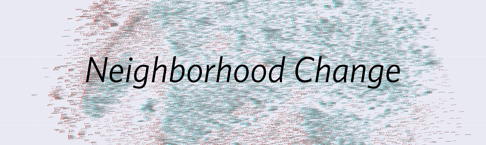

An Evaluation of Neighborhood Change in relation to: Tax Credits, Household Income, Unemployment, and High School Education levels.
Replication Instructions
All data files are split into three main folders: Raw, Rodeo, and Wrangling.
Raw
This is where all data files can be found in .csv format. These are all original versions and can be treated as sources for checking information if needed. These files remain untouched and are not read directly by the analyses. They are considered archived data files.
Rodeo
This is where .csv files have been converted into .rds files to then be read into RStudio. These are all of the files that the report chatpers are reading from, adn teh source for which functions are created. In addition, there is a helper utilities.R file that contains functions for reading variable names. If this data becomes unable to use, it can be recreated using the Raw data files.
Wrangling
The wrangling folder contains a project data steps file which hosts functions used to create the rodeo folder. If rodeo files become unusable, use this file to recreate the rodeo data.
Each are meant to live separately to reduce error and demonstrate clear processes.